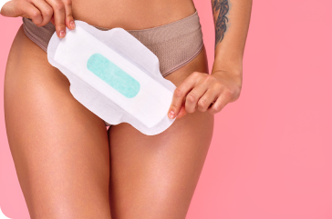

Calendário menstrual Alguma vez te perguntaste "Quando me vai aparecer o período?" EVAX&TAMPAX sabem! O nosso calendário menstrual ajuda-te a controlar o teu período durante meses. Planeia a tua viagem de praia ou aquela grande festa como um casamento. Ou se estás a tentar engravidar, controla quando estás a ovular. Então, o que é um ciclo 'normal' afinal? Em primeiro lugar, para de pensar no normal. Cada rapariga é diferente. O importante é descobrires o que é normal para ti; um rastreador de período pode ajudar-te a fazer exatamente isso. Todos os ciclos são únicos, mas entre a pré-menstruação, a menstruação e a ovulação, há algumas coisas que todas temos em comum: Pré-menstruação O temida síndrome pré-menstrual. Alguns sintomas comuns do TPM são dores de cabeça, inchaço, irritabilidade e choro mais do que o normal. Em outras palavras, aquela vontade de sentar no sofá de leggins com um pote de gelado e ver 'o diário da nossa paixão''. Todas nós já passámos por isso. É comum sentir TPM nos três dias que antecedem a menstruação. É importante saberes que a tua dieta, cafeína e estresse podem aumentar a intensidade dos sintomas da TPM. Embora esses sintomas possam ser dolorosos e desconfortáveis, a boa notícia é que existem maneiras de ajudar a geri-los: Resiste ao desejo de beber mais café que o normal. Toma um analgésico de venda livre. Usa uma bolsa de água quente. Menstruação Este é o início do teu ciclo e quando o sangramento começa. Mas por que sangramos em primeiro lugar? Como o teu óvulo não foi fertilizado, o revestimento do útero desprende-se e sai do corpo. Então, deitas sangue. Aqui estão alguns factos sobre períodos: Períodos saudáveis geralmente duram entre quatro e sete dias, sendo os dias mais intensos o primeiro e o segundo. Um ciclo médio é de 28 dias, mas pode variar de 21 a 35 dias (para calcular o teu, usa um rastreador de ciclo menstrual). O sangramento geralmente varia entre 10 e 80 gramas, ou 1 a 6 colheres de sopa de líquido (não que façamos esta medição, mas é bom saber para acompanhar as trocas de absorventes internos). Consulta o teu médico se estiveres menstruada por mais de sete dias. Pico de ovulação Este é o momento em que tu estás a ovular e com maior risco de gravidez. Este período fértil dura cerca de seis dias. Num ciclo de 28 dias, a ovulação geralmente ocorre no dia 14. Como acompanhar tua menstruação Para calcular tua menstruação, vais precisar de contar os dias entre as últimas menstruações. Começa a contar no primeiro dia da menstruação e para de contar no dia anterior à próxima menstruação. Este é o número de dias num ciclo menstrual. Faz isso durante alguns ciclos, adiciona o número total de dias e divida-os pelo número de ciclos, assim obténs o número médio de dias do teu ciclo e, depois de saber esse número, poderás acompanhar a tua menstruação facilmente. Tens mais perguntas sobre o período? Nós temos respostas.

O ciclo menstrual é um processo biológico que prepara o corpo feminino para uma possível gravidez, até à menopausa. Este divide-se em quatro fases principais, cada uma com características físicas e emocionais específicas.
Dormir bem durante a menstruação pode ser um desafio para muitas mulheres, especialmente devido a cólicas e ao desconforto abdominal...
Manter uma boa higiene íntima durante o período menstrual é fundamental para o conforto e a saúde da mulher. Os absorventes, sejam externos ou ...
Cada mulher é única, e a tensão pré-menstrual (TPM) também se manifesta de maneira diferente...
Insere a data da tua última menstruação e a duração média do ciclo para estimar quando a próxima menstruação começará e quando é mais provável que ovules.